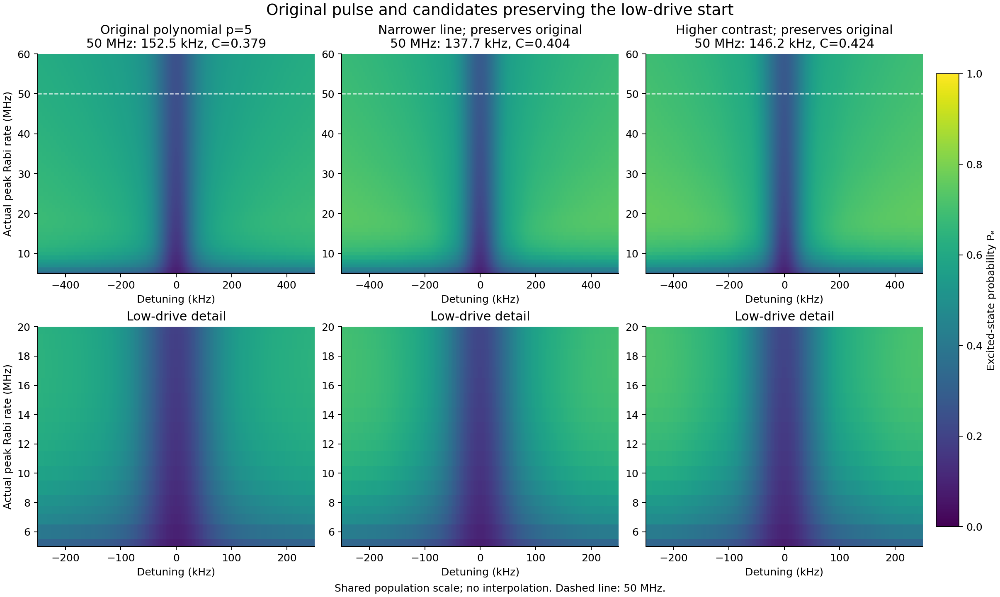
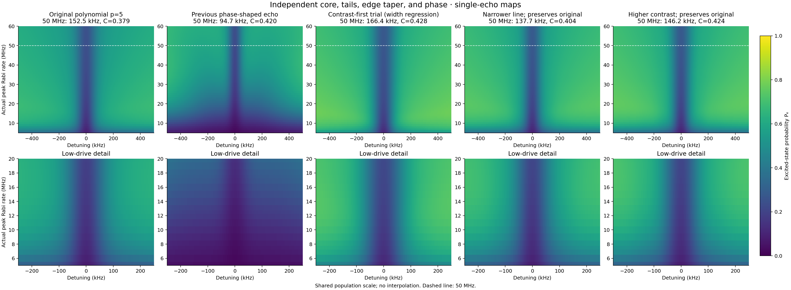
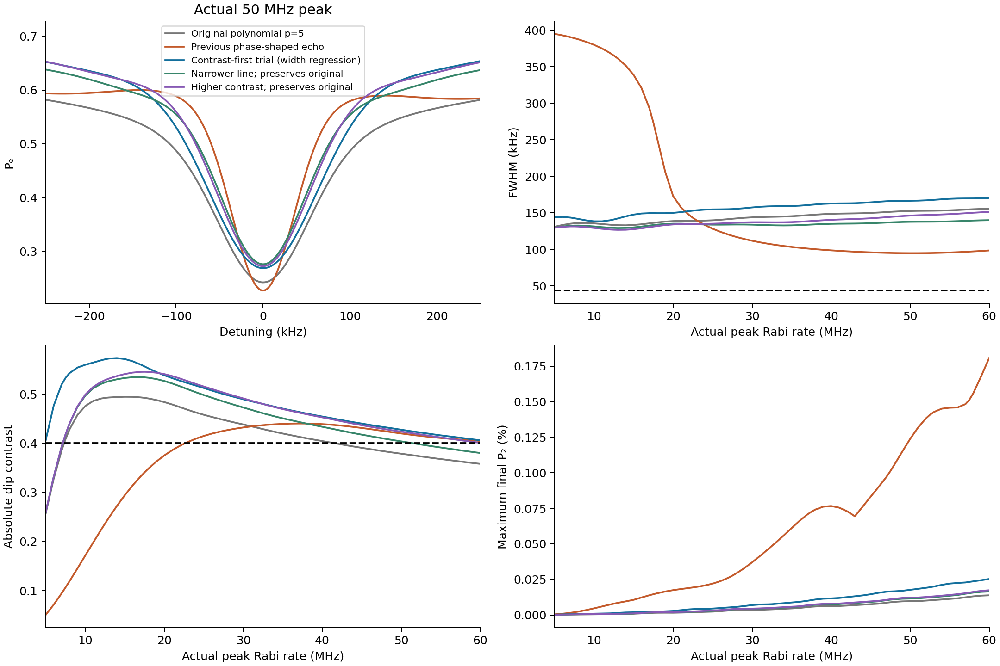
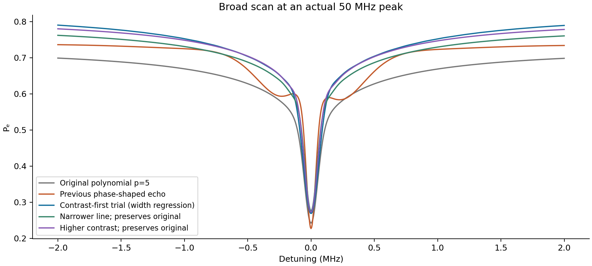
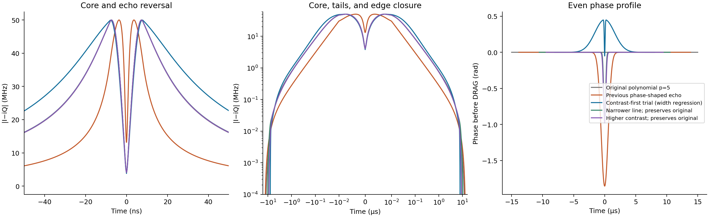

Local numerical study. One echo reversal; no free-evolution interval. All operating-point comparisons have an actual maximum |I−iQ| of 50 MHz.
Robustness is assessed over 5–60 MHz, including the low-drive start. The original p=5 pulse and previous phase-shaped pulse are controls, not automatic feasible solutions. Primary contrast is the absolute depth below a linear background fitted at 0.4–0.5 MHz from resonance; local-shoulder and broad-spectrum metrics are reported separately in the data.
| Shape | FWHM at 50 (kHz) | C at 50 | Local-shoulder C at 50 | Minimum C in band | Maximum FWHM in band (kHz) | Strict full band | Preserve original + C₅₀>0.4 |
|---|---|---|---|---|---|---|---|
| Original polynomial p=5 | 152.48 | 0.379 | 0.386 | 0.258 | 155.59 | FAIL | FAIL |
| Previous phase-shaped echo | 94.71 | 0.420 | 0.363 | 0.051 | 394.86 | FAIL | FAIL |
| Contrast-first trial (width regression) | 166.43 | 0.428 | 0.435 | 0.406 | 170.28 | FAIL | FAIL |
| Narrower line; preserves original | 137.65 | 0.404 | 0.411 | 0.260 | 139.89 | FAIL | PASS |
| Higher contrast; preserves original | 146.16 | 0.424 | 0.431 | 0.260 | 151.20 | FAIL | PASS |
The strict verdict requires C>0.4 across the full amplitude band. The separate preserve-original verdict requires C>0.4 only at 50 MHz while retaining every amplitude's baseline contrast and linewidth, plus the same center, satellite, and leakage checks. The minimum contrast in the band is shown explicitly for both interpretations.
The higher-contrast candidate has C>0.4 at every validated amplitude from 7.5 to 60 MHz. It falls below that absolute floor at 5, 6, 7 MHz, while still improving on the original pulse there. Both preserve-original verdicts cover the full requested amplitude band; they are not restricted to high drive.

PDF of candidates preserving the start. This compact comparison includes only new candidates passing the preserve-original verdict on the full validation grid, alongside the original control. It does not imply C>0.4 at every amplitude.

PDF maps · SVG maps. Every panel uses the same 0–1 probability scale, with no interpolation. Each shape is held fixed as its amplitude is swept.


The new positive envelope multiplies a root-Lorentzian core by a separately weighted tail, a generalized Lorentzian tail decay, and a local quintic endpoint taper. Core width, tail weight/decay, and edge duration are distinct parameters. Two even Gaussian phase components preserve odd time-reversed control before the complete complex-waveform DRAG correction. The ideal resonant two-level cancellation does not imply constant linewidth or contrast in the dissipative multilevel model.

Theory and interpretation note
Search summary and evaluated campaigns
These one-at-a-time changes start from the narrower candidate, renormalize the complete waveform to the same actual peak, and are not reoptimized. The table uses the coarse search grid and a 0.5 ns maximum integration step. It is a local comparison, not a proof of global optimality or a unique causal decomposition.
| Variation | FWHM at 5 MHz (kHz) | C at 5 MHz | FWHM at 50 MHz (kHz) | C at 50 MHz |
|---|---|---|---|---|
| Selected narrow candidate | 129.58 | 0.2597 | 137.67 | 0.4038 |
| Phase turned off | 141.31 | 0.2913 | 137.51 | 0.4036 |
| Tail gain set to 1 | 108.51 | 0.2495 | 140.79 | 0.3828 |
| Taper over the whole half-pulse | 148.68 | 0.2724 | 176.62 | 0.4641 |
Turning off the compact phase barely changes the 50 MHz linewidth but broadens the 5 MHz line; the phase improves low-drive selectivity at some contrast cost. Extending the taper over the whole half-pulse broadens the 50 MHz line substantially. Setting tail gain to one loses nominal contrast. The useful candidates retain a core near 15 ns, close to the original pulse, rather than the previous phase pulse's approximately 1.68 ns core. This avoids its low-drive collapse while allowing the tails and edge closure to be adjusted separately.
Ablation metrics and provenance · Ablation population arrays
The model uses T₁=51.24 µs, T₂=7.31 µs, α/2π=−216 MHz. New candidates receive time-step and frequency-grid checks at 50 MHz plus independent three-/four-/five-level propagation. The main maps are three-level simulations. Local shoulder contrast can reveal a misleading broad background; the ±2 MHz scans inspect additional dips. Gaussian bandwidth checks, when present, convolve the entire I/Q waveform and then restore its actual peak. They are illustrative transfer functions, not measurements of the hardware. No hardware experiment is run.
Implementation checks: focused tests and repository-wide exceptions
Absolute contrast after Gaussian convolution of the complete waveform, with the actual peak restored to 50 MHz. The 1, 2, and 4 ns kernel widths correspond to approximately 133, 66, and 33 MHz amplitude-response −3 dB bandwidths. These are test transfer functions, not measured hardware responses. Filtered linewidths and sampled amplitude scans are saved in results.json.
| Candidate | Unfiltered C | 1 ns C | 2 ns C | 4 ns C |
|---|---|---|---|---|
| Contrast-first trial (width regression) | 0.4276 | 0.4261 | 0.4236 | 0.4171 |
| Narrower line; preserves original | 0.4039 | 0.4017 | 0.3971 | 0.3855 |
| Higher contrast; preserves original | 0.4237 | 0.4217 | 0.4174 | 0.4061 |
{
"amplitude_min_mhz": 5.0,
"amplitude_max_mhz": 60.0,
"contrast_min": 0.4,
"no_regression_width_khz_tolerance": 0.25,
"no_regression_contrast_tolerance": 0.001,
"max_center_khz": 2.0,
"max_satellite_prominence": 0.01,
"max_final_leakage": 0.005
}Linewidth/contrast regression checks compare each amplitude with the original pulse at that same amplitude. Tolerances are numerical allowances, not improvements to the target. Any unresolved dip fails acceptance; summary minima and maxima include only defined metrics. See the per-amplitude failure lists in results.json. A PASS describes these spectral constraints on the sampled grid; convergence, multilevel, local-shoulder, and broad-spectrum audits remain separate diagnostics.
{
"baseline": {
"duration_us": 30.0,
"cutoff": 0.001,
"power": 5.0,
"transition_us": 0.016,
"drag_beta": -0.5,
"anharmonicity_mhz": -216.0
},
"previous_phase": {
"duration_us": 27.681945163021936,
"cutoff": 0.00012148126644240747,
"power": 1.373018937798303,
"transition_us": 0.016,
"drag_beta": -0.5,
"anharmonicity_mhz": -216.0,
"phase_rad": -1.8543341745279704,
"phase_scale_us": 0.7996939165673144
},
"contrast_first": {
"duration_us": 16.09042836100788,
"core_us": 0.024723051917865814,
"tail_gain": 0.7750346991388251,
"tail_join_us": 0.13821352246019378,
"tail_scale_us": 14.310113452845385,
"tail_power": 19.598301315263434,
"edge_width_us": 0.7090710318570616,
"transition_us": 0.016,
"drag_beta": -0.5,
"anharmonicity_mhz": -216.0,
"phase_rad": 0.4533785712863818,
"phase_scale_us": 2.2252374329402853,
"phase2_rad": -0.504813829663552,
"phase2_scale_us": 0.09146912240726797
},
"preserve_original": {
"duration_us": 21.101242835090837,
"core_us": 0.01510528514643049,
"tail_gain": 0.8072371180256004,
"tail_join_us": 1.5190416076585926,
"tail_scale_us": 6.612120613753458,
"tail_power": 3.536388272093394,
"edge_width_us": 3.3619104832707443,
"transition_us": 0.016,
"drag_beta": -0.5,
"anharmonicity_mhz": -216.0,
"phase_rad": -0.9331851920697108,
"phase_scale_us": 0.22742916237553631,
"phase2_rad": 0.0,
"phase2_scale_us": 4.0
},
"preserve_high_contrast": {
"duration_us": 18.8704981042782,
"core_us": 0.015035463259751998,
"tail_gain": 0.8007572916550201,
"tail_join_us": 1.2449871834559614,
"tail_scale_us": 6.843915916892468,
"tail_power": 3.627009204965284,
"edge_width_us": 3.349335411938738,
"transition_us": 0.016,
"drag_beta": -0.5,
"anharmonicity_mhz": -216.0,
"phase_rad": -0.9771686911469755,
"phase_scale_us": 0.26805749570877013,
"phase2_rad": 0.0,
"phase2_scale_us": 4.0
}
}{
"contrast_first": {
"native_diagnostics": {
"max_trace_error": 4.241051954068098e-14,
"min_population": 1.3593225715416385e-06,
"max_population": 0.8981156003123801,
"min_density_eigenvalue": 1.3591934661141524e-06,
"num_steps": 64426,
"min_dt_ns": 0.125,
"max_dt_ns": 0.25
},
"native_dt_halving_max_population": 2.3098178036917716e-08,
"native_dt_halving_fwhm_change_khz": 2.6133438805118205e-06,
"detuning_halving_fwhm_change_khz": 0.006980068218370434,
"fine_grid_50mhz": {
"center_hz": 169.4245549684392,
"fwhm_hz": 166422.38208112353,
"contrast": 0.42758676397587636,
"accepted": true
},
"wide_native_diagnostics": {
"max_trace_error": 2.9976021664879227e-14,
"min_population": 8.085878874605371e-07,
"max_population": 0.8981156003123801,
"min_density_eigenvalue": 8.084238891420111e-07,
"num_steps": 64426,
"min_dt_ns": 0.125,
"max_dt_ns": 0.25
},
"split3_vs_native_max_pe": 5.349626926332007e-06,
"levels3_vs4_max_pe": 0.00036705944761605824,
"levels4_vs5_max_pe": 1.2678648370068046e-06,
"split4_dt_refinement_max_pe": 5.041808180950014e-06,
"levels4_max_final_leakage": 0.00018110267687721187,
"levels5_max_final_leakage": 0.00018094433486934847,
"levels4_metrics": {
"center_hz": 70.19284059903077,
"fwhm_hz": 166466.66352153392,
"contrast": 0.42756920103256496,
"accepted": true
},
"levels5_metrics": {
"center_hz": 70.96271747358944,
"fwhm_hz": 166466.92843567923,
"contrast": 0.4275696305250081,
"accepted": true
}
},
"preserve_original": {
"native_diagnostics": {
"max_trace_error": 4.218847493575595e-14,
"min_population": 4.984698080750249e-07,
"max_population": 0.9176435570300934,
"min_density_eigenvalue": 4.984178732633835e-07,
"num_steps": 84470,
"min_dt_ns": 0.125,
"max_dt_ns": 0.25
},
"native_dt_halving_max_population": 1.136479099717036e-08,
"native_dt_halving_fwhm_change_khz": 1.3724735181313008e-06,
"detuning_halving_fwhm_change_khz": 0.019769072511291598,
"fine_grid_50mhz": {
"center_hz": 115.43458661091647,
"fwhm_hz": 137630.76440220655,
"contrast": 0.403856808017539,
"accepted": true
},
"wide_native_diagnostics": {
"max_trace_error": 4.1744385725905886e-14,
"min_population": 3.7536776564181846e-07,
"max_population": 0.9176435570300934,
"min_density_eigenvalue": 3.7529883159650165e-07,
"num_steps": 84470,
"min_dt_ns": 0.125,
"max_dt_ns": 0.25
},
"split3_vs_native_max_pe": 2.0810482246336193e-06,
"levels3_vs4_max_pe": 0.00043136508694474607,
"levels4_vs5_max_pe": 1.4162792588146011e-06,
"split4_dt_refinement_max_pe": 2.8236363773803674e-06,
"levels4_max_final_leakage": 0.0001181019037088636,
"levels5_max_final_leakage": 0.00011808256154464913,
"levels4_metrics": {
"center_hz": 23.202269321458186,
"fwhm_hz": 137693.17082079986,
"contrast": 0.4038456096775912,
"accepted": true
},
"levels5_metrics": {
"center_hz": 22.6708529455756,
"fwhm_hz": 137693.36366608497,
"contrast": 0.403845448892322,
"accepted": true
}
},
"preserve_high_contrast": {
"native_diagnostics": {
"max_trace_error": 4.0190073491430667e-14,
"min_population": 5.327381182165433e-07,
"max_population": 0.9183577482107101,
"min_density_eigenvalue": 5.326541330546412e-07,
"num_steps": 75546,
"min_dt_ns": 0.125,
"max_dt_ns": 0.25
},
"native_dt_halving_max_population": 1.2114016900710567e-08,
"native_dt_halving_fwhm_change_khz": 1.2796406226698309e-06,
"detuning_halving_fwhm_change_khz": 0.008106443064927589,
"fine_grid_50mhz": {
"center_hz": 68.12042945943493,
"fwhm_hz": 146150.90246172345,
"contrast": 0.4236627115063226,
"accepted": true
},
"wide_native_diagnostics": {
"max_trace_error": 3.47499806707674e-14,
"min_population": 4.009157101016956e-07,
"max_population": 0.9183577482107101,
"min_density_eigenvalue": 4.008075561025666e-07,
"num_steps": 75546,
"min_dt_ns": 0.125,
"max_dt_ns": 0.25
},
"split3_vs_native_max_pe": 2.308713003440488e-06,
"levels3_vs4_max_pe": 0.0003585093304193654,
"levels4_vs5_max_pe": 1.2015668426901271e-06,
"split4_dt_refinement_max_pe": 3.20619843163783e-06,
"levels4_max_final_leakage": 0.00012504955506445695,
"levels5_max_final_leakage": 0.00012505724009818814,
"levels4_metrics": {
"center_hz": -2.5839367386957277,
"fwhm_hz": 146217.09382742428,
"contrast": 0.42365010840700273,
"accepted": true
},
"levels5_metrics": {
"center_hz": -3.236761893015347,
"fwhm_hz": 146217.29609203973,
"contrast": 0.4236501258306313,
"accepted": true
}
}
}
All metrics, failure lists, bandwidth checks, and provenance · Saved population arrays · Comparison PDF
Reproduce with .venv/bin/python scripts/report_decoupled_50mhz_echo.py --candidates PATH --stage all. Use --stage render to regenerate figures and this report from saved data without rerunning simulations.